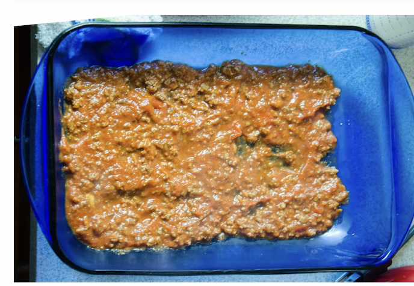
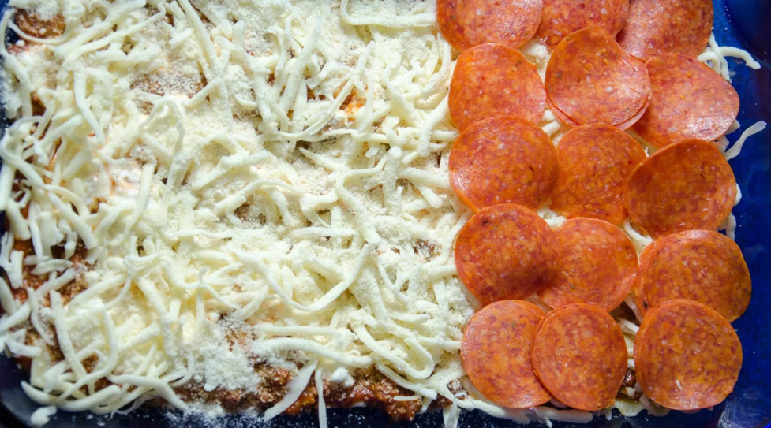

Ingredients
Allergy info:
Dish may contain: Gluten,Crustaceans,Eggs,Fish,Peanuts,SoybeansThe reason I picked Lasuagua is because its my favorite food. It contains lots of yummy ingredents, for example, pasta,meat, cheese, and tomato sauce. B vitamin with helps you drive your body's metabolism.
Steps/Instrutions:
1. preheat oven to 350º degrees Place beef and itlatian sausage in a larger pan. Drain the fat, try to press on it with a paper towel too.
2. Cook lasagua noodles in water, dash salt, a bit of oil. lay out on towels, when you're done.
3.Cover the bottom with a thin layer of meat mixtures.(meat, spagetti sauce, and spices)
4. Cover the layer of noodles and smear sauce on top of the noodles.
5. Add 1/2 of Cottage Cheese , then sprinkle 1/3 of Mozzarella and 1/3 of Parmesan over this. Add peppeonis(this is optional)
6. Cover it with the noodles and bascially repeat step 4.

7. Repeat step 5.
8. Spread the last of mozzarella cheese amd parmesan.
9. Put in the oven for 350 degress about 45 to an 1 hour. then enjoy!!